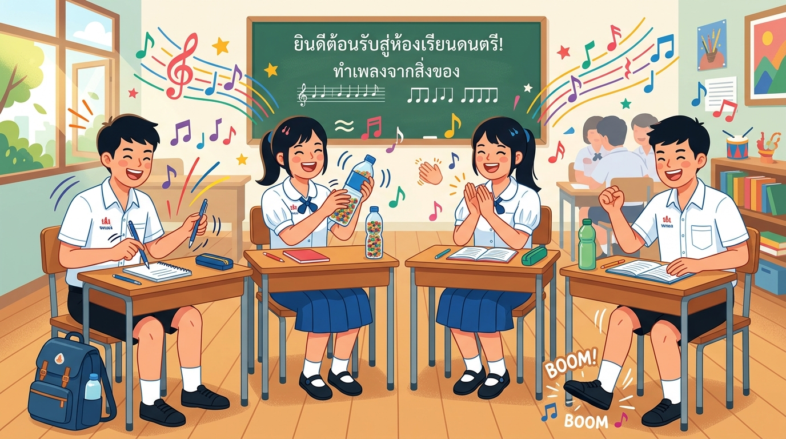
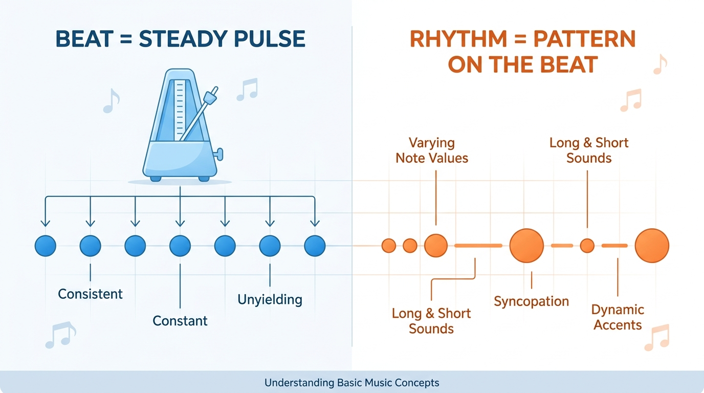

คาบที่ 4 · เทคโนโลยีดนตรีและการสร้างสรรค์เสียงด้วย AI
เปลี่ยนสิ่งของรอบตัว — โต๊ะ ปากกา ขวดน้ำ ตบมือ — ให้กลายเป็นเครื่องดนตรี
สร้าง Beat Pattern แรกของคุณโดยไม่ต้องอ่านโน้ตสักตัว!
โรงเรียนสุรศักดิ์มนตรี · คอมพิวเตอร์ดนตรี ม.4
คาบที่แล้วเราเจาะลึกเรื่อง Ambience — เสียงบรรยากาศที่ควบคุมอารมณ์ ได้ทดลองมิกซ์เสียง ผสม Layer และเขียน Prompt สั่ง AI
เช็คการบ้าน: ทุกคนส่ง ใบงานที่ 1: Listening & Sound Diary ลง Google Classroom เรียบร้อยแล้วใช่ไหม? วันนี้เราจะเปลี่ยนจากเสียง "ฉากหลัง" มาสู่เสียง "จังหวะ" กัน!

จำได้ไหม? เสียงที่เราล่ามาในสัปดาห์ที่ 2 ถูกแบ่งเป็น 4 กลุ่ม — วันนี้เราจะ "ซูม" เข้าไปที่กลุ่มที่ 2!
เสียงบรรยากาศฉากหลัง
✅ เรียนแล้ว (คาบ 3)
🎯 วันนี้! เสียงเคาะจังหวะจากสิ่งของรอบตัว
เสียงพูด ร้อง ฮัม
📅 เรียนสัปดาห์หน้า
เสียงสัญญาณ เสียงเตือน
ใช้เป็น Effect
💡 Object Percussion คือการทำ "จังหวะ" จากสิ่งของที่ไม่ใช่เครื่องดนตรี — ถ้า Ambience เป็น "ฉากหลัง" แล้ว Object Percussion ก็คือ "หัวใจ" ของเพลง!
ทำความรู้จัก Beat, Rhythm, Tempo และ BPM
ไม่ต้องอ่านโน้ต — แค่ฟังและนับตามก็เข้าใจได้!
จังหวะ = รูปแบบของเสียงและความเงียบที่เรียงตัวกันตามเวลา — เป็นสิ่งที่ทำให้ดนตรีน่าสนใจ ไม่ใช่แค่เสียง "ติ๊กๆ" เท่ากัน
ลองเอามือวางบนหน้าอก แล้วรู้สึกการเต้นของหัวใจ — นั่นคือจังหวะ!
เวลาเราพูด บางคำสั้น บางคำยาว — นั่นก็คือจังหวะเช่นกัน!
สูตรง่ายๆ: จังหวะ = เสียง + ความเงียบ + เวลา
| Beat (บีท) | Rhythm (จังหวะ) | |
|---|---|---|
| คือ | ชีพจรสม่ำเสมอ เหมือนหัวใจ | ลวดลายของเสียง เหมือนท่าเต้น |
| ลักษณะ | คงที่ ไม่เปลี่ยน ติ๊ก-ติ๊ก-ติ๊ก-ติ๊ก | เปลี่ยนไปเรื่อย ตุ๊ม-แตก-ตุ๊ม ตุ๊ม-แตก |
| เปรียบ | 🚶 การเดิน — ก้าวสม่ำเสมอ | 💃 การเต้นรำ — หลากหลายท่า |
| ลองทำ | เคาะเท้าตามเพลง | ปรบมือตามทำนองร้อง |

ลองทำตาม: เปิดเพลงที่ชอบ → เคาะเท้าตามจังหวะ (= Beat) → ปรบมือตามทำนองร้อง (= Rhythm) → สังเกต: เท้าเคาะสม่ำเสมอ แต่มือปรบแตกต่างกันในแต่ละท่อน!
Tempo (เทมโป) = ความเร็วของ Beat — วัดเป็น BPM (Beats Per Minute) หรือจำนวนจังหวะต่อนาที
| แนวเพลง | BPM | อารมณ์ |
|---|---|---|
| 🐢 บัลลาด/Slow | 60–80 | ช้า เศร้า ซึ้ง |
| 🚶 Hip-Hop/R&B | 85–115 | ชิลๆ มีสไตล์ |
| 🏃 Pop | 100–130 | สนุก ฟังสบาย |
| 🏃♂️ Rock/EDM | 120–140 | ตื่นเต้น พลังสูง |
| 🚀 Drum & Bass | 160–180 | เร็วมาก ลุ้นระทึก |
BPM สูง = เร็ว = ตื่นเต้น
BPM ต่ำ = ช้า = สงบ/เศร้า
ลองเปิดเพลงที่ชอบ แล้วกดปุ่มตามจังหวะ ระบบจะคำนวณ BPM ให้อัตโนมัติ!
กดตามจังหวะเพลง (อย่างน้อย 4 ครั้ง)
วิธีใช้: เปิดเพลง → กดปุ่มส้มตามจังหวะ Beat ของเพลง (เคาะเท้าตามก่อนก็ได้) → ดูค่า BPM ที่คำนวณได้!
เรียนรู้การสร้างรูปแบบจังหวะ แค่นับ 1-2-3-4
ไม่ต้องอ่านโน้ต ไม่ต้องเล่นกลองเป็น!
Pattern = รูปแบบจังหวะที่ทำซ้ำได้ เหมือนลายผ้า — ทุกเพลงมี Pattern ตั้งแต่ K-Pop ไปจนถึงเพลงลูกทุ่ง!
จังหวะที่ใช้บ่อยที่สุดในโลก! นับ 1-2-3-4 แล้วเริ่มใหม่
เพลงป๊อป ร็อค ฮิปฮอป แร็ป EDM ลูกทุ่ง — ส่วนใหญ่ใช้ 4/4 ทั้งนั้น!
X = ตี/เคาะ – = เงียบ
👆 นี่คือ Pattern พื้นฐานที่ใช้ในเพลงป๊อปทั่วโลก!
Kick (จังหวะหนัก) ตี 1 กับ 3 · Snare (จังหวะเน้น) ตี 2 กับ 4 · Hi-hat ตีทุกจังหวะ
เริ่มง่ายสุดแล้วค่อยๆ เพิ่มความสนุก — ไม่ต้องรีบ ทำทีละขั้น
เคาะทุกจังหวะ — ตบมือ: X X X X
โต๊ะ = Kick (1,3) · ตบมือ = Snare (2,4)
เพิ่มปากกาเคาะเป็น Hi-hat ทุกจังหวะ
เพิ่ม Effect (ขวดน้ำ) ในบางจังหวะ
กดช่องเพื่อวาง Beat แล้วกดเล่น — ลองสร้าง Pattern ของคุณเอง!
โต๊ะ ปากกา ขวดน้ำ หนังสือ ตบมือ ดีดนิ้ว กระทืบเท้า
ทุกอย่างรอบตัวสามารถเป็นเครื่องดนตรีได้!
ไม่ต้องมีกลองจริง — ใช้สิ่งของบนโต๊ะเรียนก็สร้าง Beat ได้!
| สิ่งของ | วิธีทำเสียง | เสียงคล้าย | หน้าที่ใน Beat |
|---|---|---|---|
| 🪑 โต๊ะ | ตบฝ่ามือ / กำหมัดเคาะ | Kick (กลองเบส) | จังหวะหนัก 💥 |
| 🖊️ ปากกา | เคาะกับโต๊ะ / กลิ้งเคาะ | Hi-hat (ฉาบ) | จังหวะถี่เบาๆ |
| 📖 หนังสือ | ปิดดังๆ / ตบ / เคาะ | Snare (กลองสแนร์) | จังหวะเน้น 👊 |
| 🧴 ขวดน้ำ | เคาะด้านข้าง / เขย่า | Shaker / Effect | เพิ่มสีสัน ✨ |
| 📏 ไม้บรรทัด | เคาะกับโต๊ะ / สั่นเสียง | Woodblock / Rim | จังหวะเสริม |
เคล็ดลับ: เสียงจะเปลี่ยนตามตำแหน่งที่เคาะ! ลองเคาะ กลางโต๊ะ vs ขอบโต๊ะ, ขวดมีน้ำ vs ขวดเปล่า, ตบมือแบน vs ถ้วยมือ — เสียงต่างกันมาก!
ไม่มีสิ่งของ? ไม่เป็นไร! ร่างกายของเราก็เป็นเครื่องดนตรีได้
ตบมือเข้าด้วยกัน
เสียงคล้าย: Snare/Clap
💡 แบมือ vs ถ้วยมือ = เสียงต่าง!
ดีดนิ้วกลาง
เสียงคล้าย: Hi-hat เบาๆ
ใช้เป็นจังหวะเบาได้
ตบฝ่ามือลงหน้าขา
เสียงคล้าย: Bongo drum
เสียงนุ่มกว่าตบมือ
กระทืบเท้าลงพื้น
เสียงคล้าย: Bass drum
เสียงทุ้ม หนัก สั่น!
ปรบลิ้นกับเพดานปาก
เสียงคล้าย: Tick/Click
เสียงคม แหลม
เท้า (1) → ขา (2) → ตบมือ (3) → ดีดนิ้ว (4) → ทำซ้ำ!
STOMP คือกลุ่มศิลปินระดับโลกที่สร้างดนตรีจากสิ่งของรอบตัว — ไม้กวาด ถังขยะ ฝาหม้อ แก้วน้ำ — ทุกอย่างเป็นเครื่องดนตรีได้!
STOMP — Brooms (ไม้กวาด)
ดูเพิ่มเติม: ลอง YouTube ค้นหา "bucket drumming", "pen tapping" หรือ "cup song" — คนวัยเดียวกันทำ Beat จากสิ่งของได้สุดยอดมาก!
เก็บเสียง Object Percussion ให้ชัดและคมที่สุด!
ถือมือถือห่างจากวัตถุพอประมาณ
ใกล้เกินไป = เสียงแตก
ไกลเกินไป = เสียงเบา
ถ้าเคาะโต๊ะ ให้ ถือมือถือ หรือ วางที่อื่น เพราะจะสั่นตามมาก
ปิดพัดลม ปิดหน้าต่าง ไม่อัดตอนมีคนคุย — วางผ้าช่วยลดเสียงก้อง
อัดทดสอบ 5 วินาที แล้วฟังดูก่อนอัดจริง — ลองหลายตำแหน่ง
อัดเสียงแต่ละวัตถุแยกไฟล์ เช่น desk_kick.m4a, pen_hihat.m4a
Voice Memos (iOS) · Recorder (Android) · BandLab (ทุกระบบ)
ถึงเวลาลงมือทำจริง! เปลี่ยนห้องเรียนให้เป็นสตูดิโอ
สร้าง Beat Pattern จากสิ่งของรอบตัว แล้วอัดเป็นไฟล์เสียง
ฟังจังหวะตัวอย่าง → เลียนแบบตามทันที! เริ่มง่ายแล้วค่อยยากขึ้น
กำหนด "จังหวะพิษ" 1 แบบ — ถ้าได้ยินจังหวะพิษ ต้องเงียบ! ถ้าตบตามก็ "ออก"!
👏 👏 👏 👏
👏 – 👏👏 –
👏 🦵 👏👏 🦶
🦶 👏 🦵🤏 👏🦶
แบ่งกลุ่ม 4-5 คน ร่วมกันสร้าง Beat Pattern จากสิ่งของรอบตัว!
เช็คก่อนส่ง: ✅ มีเสียง ≥ 3 แบบ · ✅ เสียงไม่แตก/เบา · ✅ จัดเป็น pattern ซ้ำได้ · ✅ ตั้งชื่อไฟล์ชัดเจน
สำหรับกลุ่ม: เช็ก Pattern และคุณภาพเสียงของตัวเอง ลองเปลี่ยนวัตถุหรือความเร็วเพื่อหาเสียงที่ชัดที่สุด
แต่ละกลุ่มมีเวลา 25 นาที สำรวจ → ออกแบบ → ฝึกซ้อม → อัดเสียง
คำแนะนำกิจกรรม: ถ้า Pattern ยังไม่ชัด ให้ลดจำนวนเสียงก่อน ถ้าเสร็จเร็ว ให้ลองเพิ่ม Level หรือเปลี่ยน Tempo แล้วฟังว่าอารมณ์เปลี่ยนอย่างไร
แต่ละกลุ่มเล่น Beat Pattern ของตัวเอง (สดหรือเปิดไฟล์เสียง) แล้วช่วยกันฟีดแบ็ค!
วันนี้เราเปลี่ยนจาก "ฉากหลัง" (Ambience) มาสู่ "หัวใจ" (Rhythm & Beat) ของดนตรี!
👇 สไลด์ถัดไปจะเป็นแบบทดสอบทบทวนความเข้าใจ 10 ข้อสำหรับสัปดาห์นี้
แบบทดสอบเก็บคะแนนสะสม